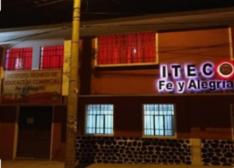
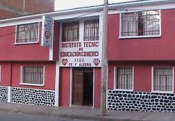
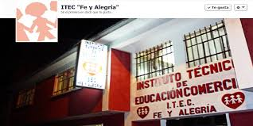
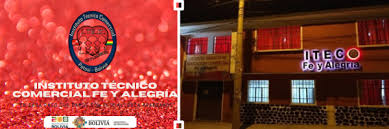

Fe y Alegría es una institución dependiente de la Compañía de Jesús, tiene su origen en Venezuela y fue fundado en 1955 por el Rvdo. Padre José María Vélas; en La Paz - Bolivia, en 1966 surge Fe y Alegría gracias a Humberto Portocarrero; el 15 de abril de 1967 en la Villa Imperial, en el domicilio particular de la familia Vera, en calle 1° de mayo, se crea Fe y Alegría al servicio de los más necesitados, en diferentes ciclos.
Posteriormente, se crea Centros Humanísticos de capacitación técnica en diferentes ramas, uno de esos centros dependiente de la Dirección Departamental de “Fe y Alegría”, fue el Instituto Técnico Acelerado “Túpac Katari”, fundado en 1980 que funcionaba en el actual Colegio “Luis Espinal”, ahí se formaban profesionales a Nivel Técnico Medio en las carreras de Auxiliares de Contabilidad y Técnicas de Oficina. Con el transcurrir del tiempo, estas carreras no fueron satisfechas en la formación profesional del estudiante, este hecho hizo posible que el Director, Prof. Mario Mamani Morales elabore un Proyecto Académico que permita la reformulación de la malla curricular del instituto. Fundamentado en dicho documento, el Consejo de Docentes del Centro Técnico Acelerado “Túpac Katari” se reunió el 27 de Octubre de 1989 con el único propósito de la Fundación del Instituto Superior de Educación Comercial ISEC “Fe y Alegría”, encomendándose la iniciación de los trámites al Director del Centro en coordinación con la Dirección Departamental de Fe y Alegría, Profesora Delia Chungara de Ortega. Después de largos trámites el CEDEC – Potosí le otorgó la Resolución Administrativa N° 22/89 de fecha 9 de Octubre de 1989, autorizándose la reformulación de la estructura curricular del Instituto.
El nuevo instituto inició sus actividades formando profesionales a Nivel Técnico Superior en las carreras de Secretariado Administrativo y Contabilidad General, después de unos años, y por una necesidad emergente, se creó la carrera de Informática.
En cumplimiento a normas establecidas, el Ministerio de Educación, Cultura y Deportes, el 9 de Septiembre de 1998 le otorga la Resolución Ministerial N° 291/98 que legaliza el funcionamiento del Instituto Superior de Educación Comercial ISEC “Fe y Alegría”, formando así profesionales con Título en Provisión Nacional en las carreras de Secretariado Ejecutivo, Analista de Sistemas y Contabilidad General a nivel Técnico Superior.
El Instituto desde su fundación ha pasado por distintos lugares alejados del centro de la ciudad, comienza sus actividades en su lugar de origen, en el actual Colegio “Luis Espinal Camps”, en la zona alta de San Cristóbal, su primer Director fue el Prof. Mario Mamani Morales, posteriormente el Instituto cumple sus funciones en el Kínder Concepción, Zona del Mercado Calvario, era de destacar cómo los jóvenes y señoritas estudiantes ocupaban las aulas de los niños infantes, la incomodidad era sentida, allí el instituto trabajó por una sola gestión. Por dar comodidad a los estudiantes, el instituto se traslada a la Zona de San Benito, al Instituto de Rehabilitación San Juan de Dios, allí también cumple sus actividades académicas durante una sola gestión. Posteriormente el Instituto Superior, viendo el crecimiento vegetativo del alumnado, se instala en la populosa Zona de San Pedro, en calle Beni N° 106, en dependencias de la Parroquia de San Pedro. En éste lugar, presta sus servicios aproximadamente unos doce años, durante este tiempo y gracias al esfuerzo de los administrativos, docentes y estudiantes, se hacen varias acciones comunales para construir nuevos ambientes.
Después de largas gestiones administrativas, principalmente por la Dirección Departamental de “Fe y Alegría”, a la cabeza de la Profesora Elizabeth Chungara de Villalba y por una donación de la Embajada Japonesa, en la gestión del 2005, el Instituto Superior de Educación Comercial ISEC “Fe y Alegría” cuenta con su propio edificio, situado en la Av. Argentina Nº 70–A, Ciudad Satélite.
En el actual edificio fue Rector el Prof. Fausto Cáceres Álvarez, quien cumplió satisfactoriamente durante dos años. Posteriormente desempeña como Rectora la Dra. Betty Torres Córdova, con medidas acertadas y llevando en alto el nombre de nuestro querido instituto.
Posteriormente, entre las gestiones 2015 al 2021 estuvo a la cabeza del ITEC, el connotado maestro, Lic. Freddy Gutiérrez Bayá, con quien se trabajó a satisfacción de toda la comunidad en forma unida. En la actualidad, desde la gestión 2021 se desempeña como Rector el Ing. Wilbert Erquicia Rodriguez con desempeño eficiente.
El instituto actualmente tiene una infraestructura adecuada contando con tres Gabinetes de Informática con equipos de última generación, equipos de Ofimática para la práctica de la Carrera de Secretariado Ejecutivo, Biblioteca especializada para las carreras de Secretariado Ejecutivo, Contaduría General y Sistemas Informáticos; para el proceso enseñanza – aprendizaje se utilizan tecnologías de última generación como Data Display y Retroproyectora; sus ambientes son cálidos, con pizarras acrílicas y una infraestructura totalmente nueva.